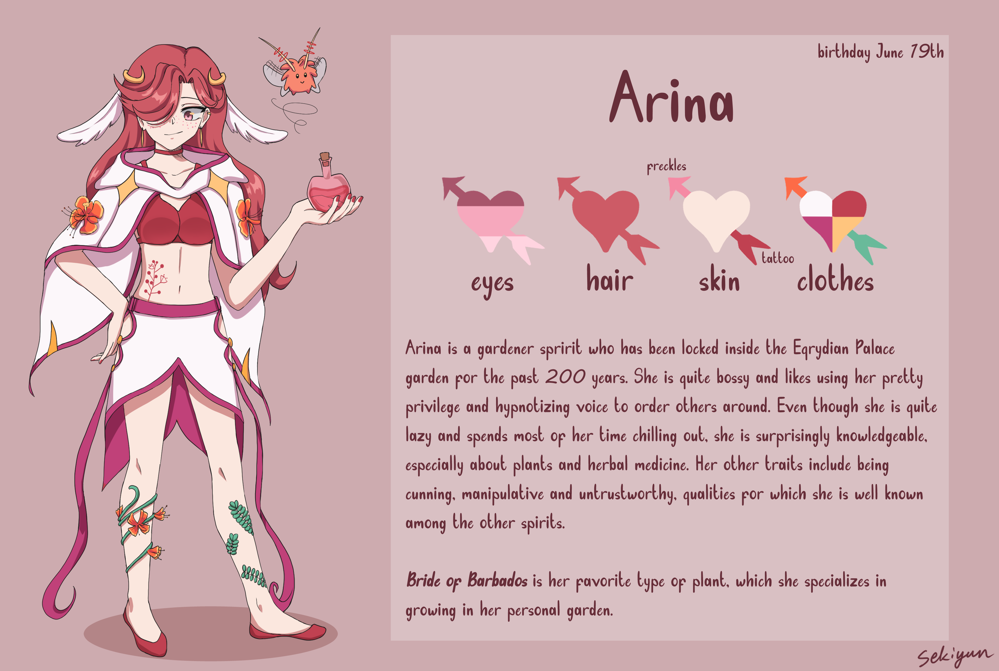
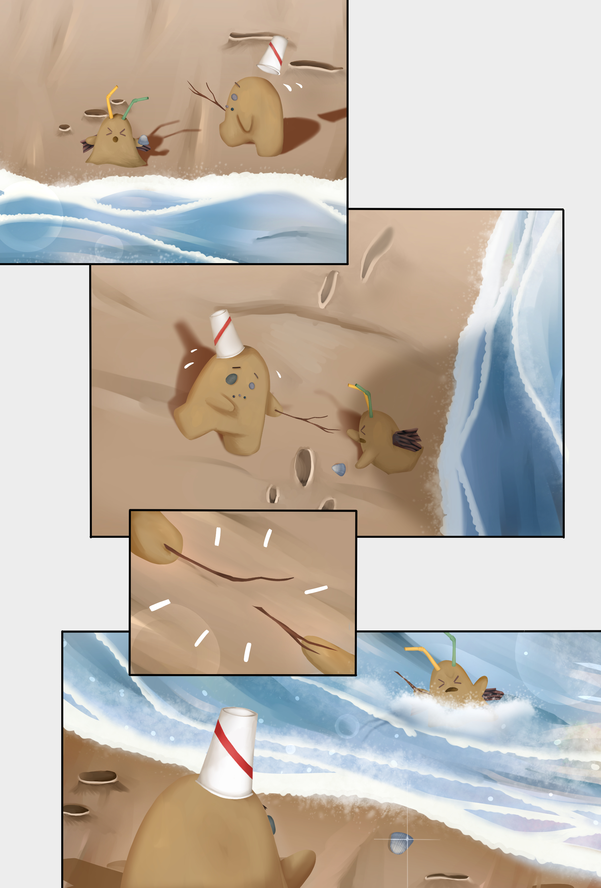
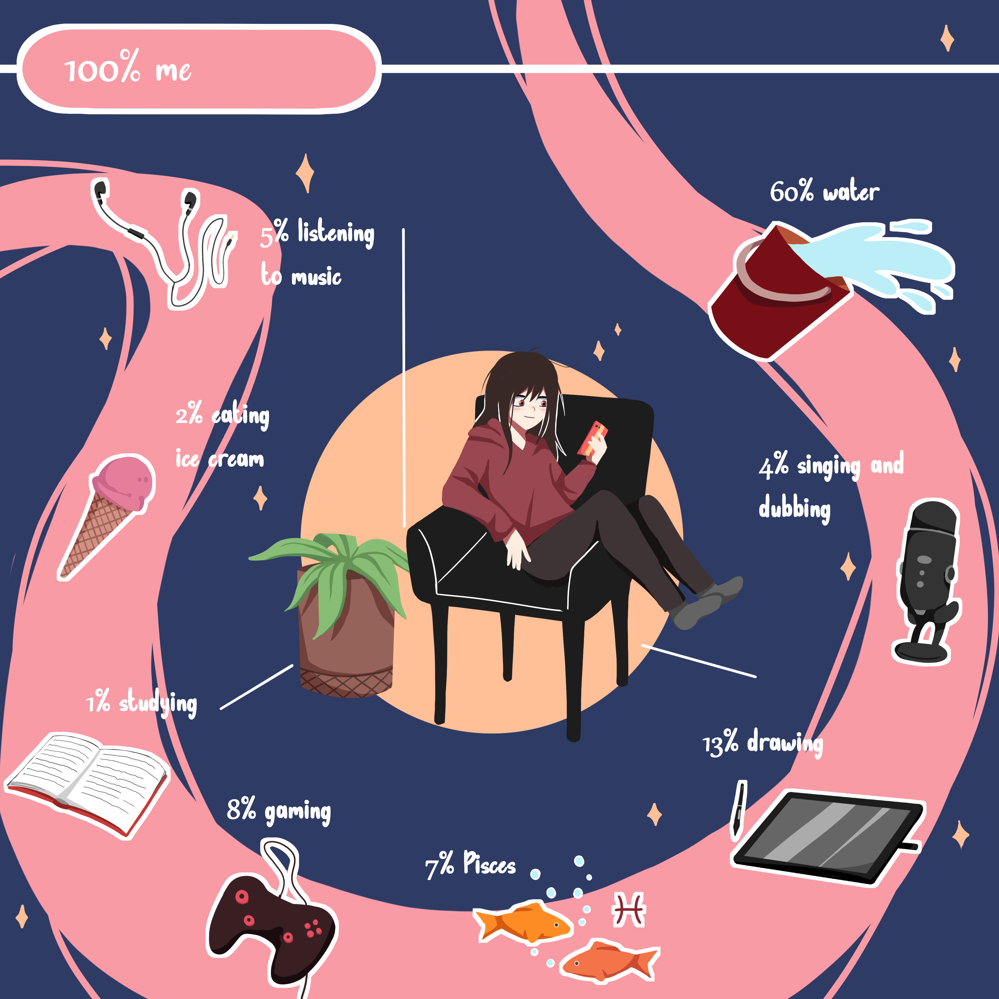
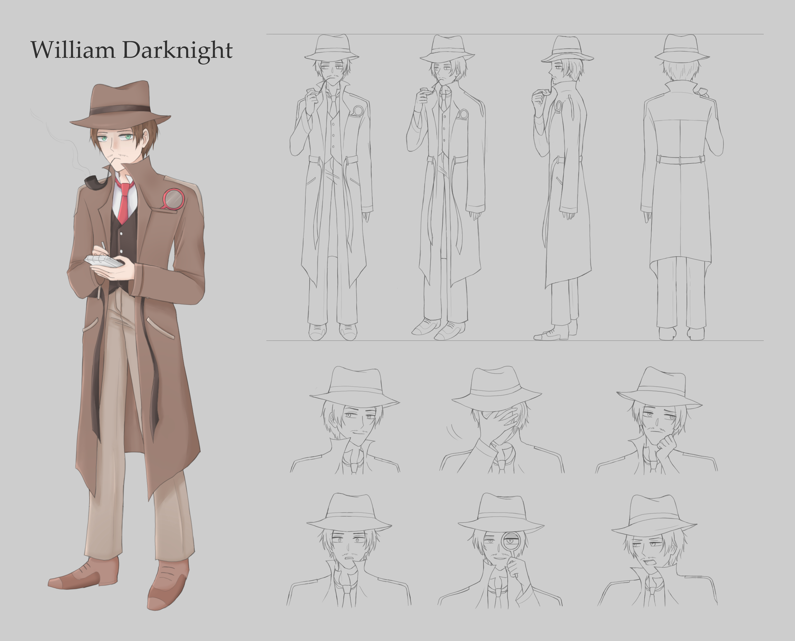

"BIRTHDAY"

An horror birthday illustration. Inspired by the game Resident Evil 7: Biohazard. (2024)
Below are my illustrations and other artworks. I have been making art since I was very young, and I have a lot of experience with personal art, commissions and collaborations. I especially enjoy character designing and art with horror elements.
An horror birthday illustration. Inspired by the game Resident Evil 7: Biohazard. (2024)

A reference sheet for my original character Arina. (2024)

A lonely dinner. Inspired by the Netflix show Re:Mind. (2024)

A character commission. The prompt was given by the commissioner, but the the character is fully designed by me. (2023)

Halloween illustration of my original character made for a collaboration with another artist. (2023)

A pre-assignment comic for my applicaion for the animation program in Metropolia. (2022)

An infographic assignment I made of myself. (2022)

A practice assignment. (2022)

An assignment for creating a detective character. (2021)